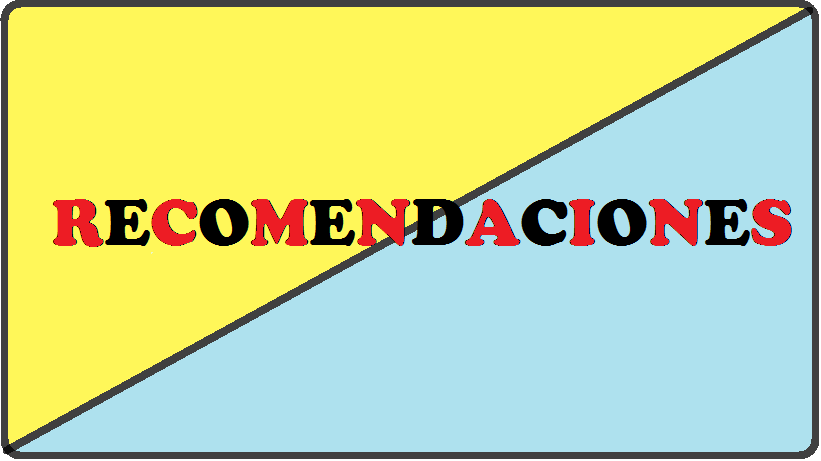
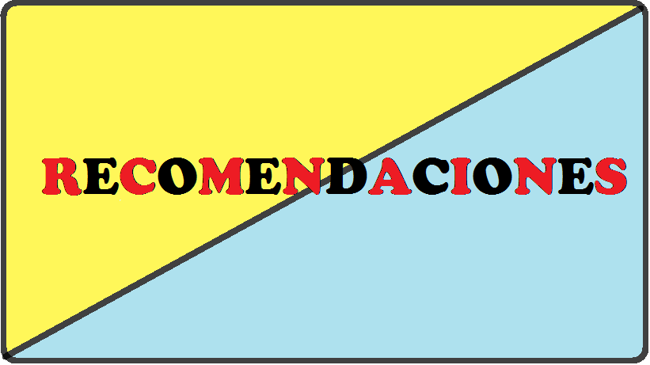

La principal forma de propagación de la COVID‑19 es a través de las gotículas respiratorias expelidas por alguien que tose o que tiene otros síntomas como fiebre o cansancio. Muchas personas con COVID‑19 presentan solo síntomas leves. Esto es particularmente cierto en las primeras etapas de la enfermedad. Es posible contagiarse de alguien que solamente tenga una tos leve y no se sienta enfermo. Según algunas informaciones, las personas sin síntomas pueden transmitir el virus. Aún no se sabe con qué frecuencia ocurre. La OMS está estudiando las investigaciones en curso sobre esta cuestión y seguirá informando sobre las conclusiones que se vayan obteniendo.
Practicar la higiene respiratoria y de las manos es importante en TODO momento y la mejor forma de protegerse a sí mismo y a los demás. Cuando sea posible, mantenga al menos un metro de distancia entre usted y los demás. Esto es especialmente importante si está al lado de alguien que esté tosiendo o estornudando. Dado que es posible que algunas personas infectadas aún no presenten síntomas o que sus síntomas sean leves, conviene que mantenga una distancia física con todas las personas si se encuentra en una zona donde circule el virus de la COVID‑19.